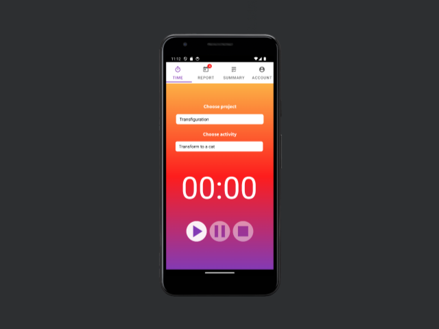
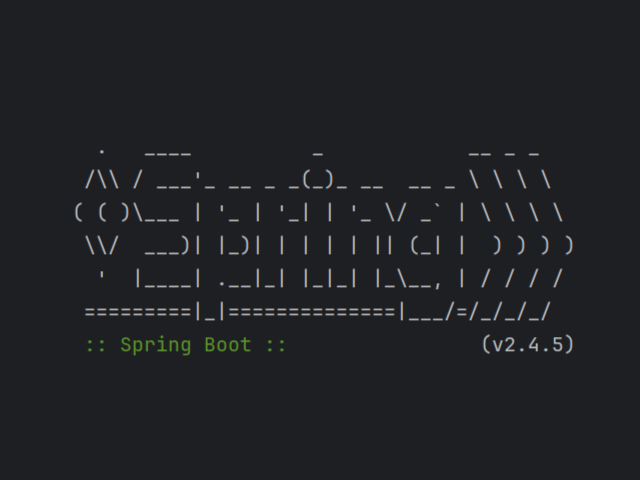
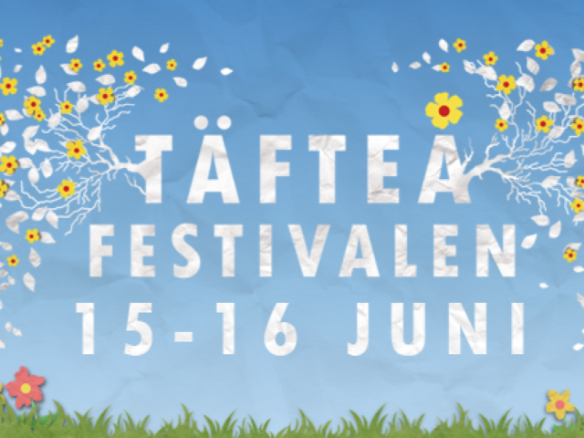
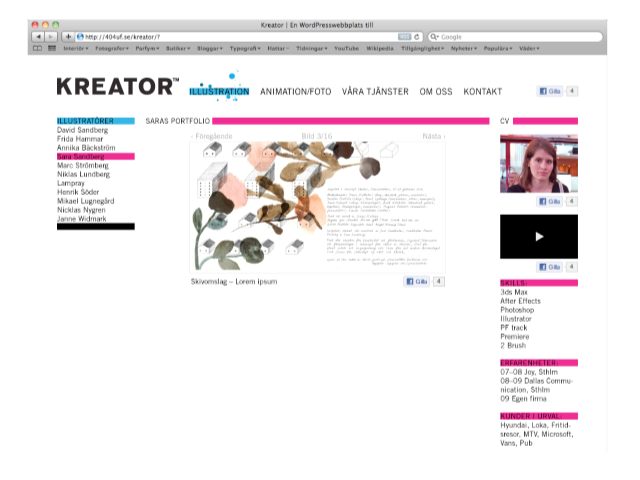

Portfolio TicTac Frontend Info Github Tictac Frontend  Ett projekt jag och en klasskompis gjorde på Consid i Sundsvall. Detta är en Android-app byggd i java, inte Kotlin. TicTac Backend Info Github Tictac Frontend  Ett projekt jag och en klasskompis gjorde på Consid i Sundsvall. Detta är en REST-Service i form av en Spring Boot Applikation. Täfteå-festivalen Info Wordpress-sida Täfteå-festivalen  Hemsida för den sista Täfteå-festivalen 2012. Wordpressida som inte finns kvar längre. Enda jag har kvar är banners, som inte är min design. Kreator Info Wordpress-sida Kreator  Hemsida för det före detta företaget Kreatoriet i Umeå. Wordpressida som inte finns kvar längre. Enda jag har kvar är designdokument och logotyper. Passa in Info Animation Passa in Animation från en kurs när jag gick på Umeå Konstskola. Gjord med dv-kamera, OH-film, spritpenna och plastfärger.